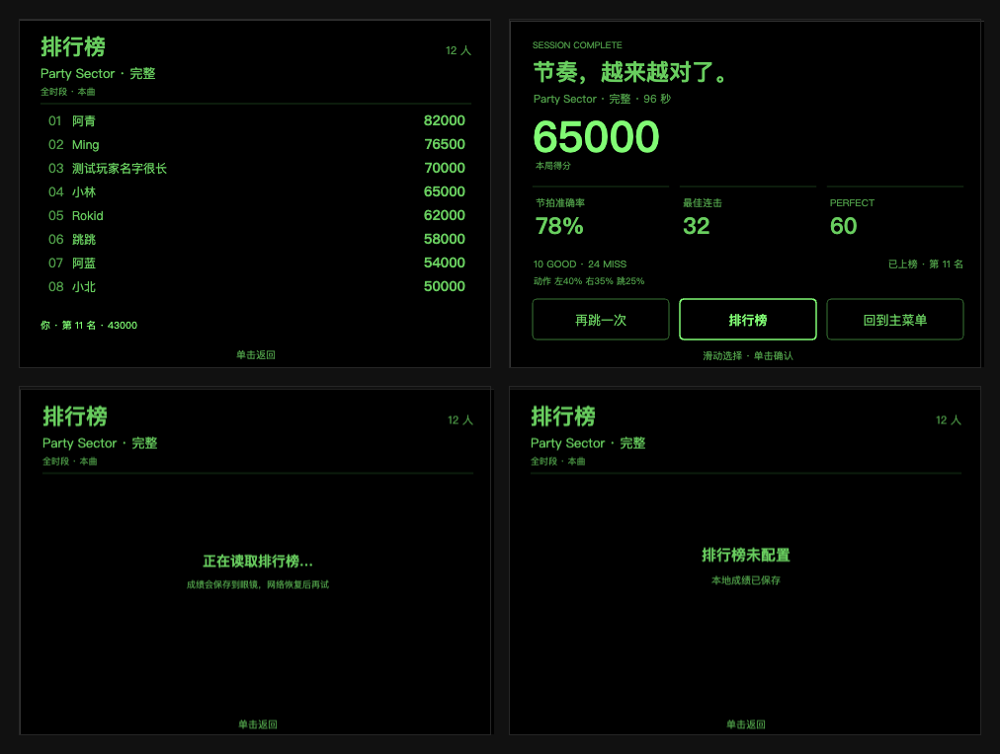

灵珠当后端：给 AIUI 应用做一张跨账号排行榜
征文活动：AIUI 十二月征文计划
开源仓库：https://github.com/sengmitnick/rhythm-jump
智能体名称：节奏开跳 ｜ AIUI ID：【真实 AIUI ID】 ｜ 上架状态：【未提交 / 审核中 / 已上架，附真实链接】
做这个排行榜之前，我以为最难的是排序。
结果第一版上线，两个账号各自提交成绩都成功，换台设备登录，榜单里只剩自己。查了半天 SQL，条件写得干干净净，就是没有 user_id 过滤。后来才发现问题根本不在查询语句，而在那张表的权限模式：平台按调用者把记录隔离了，工作流再怎么查都只看得见自己那份。
这篇文章记录的就是这一路的活：AIUI 应用没有服务器，怎么用灵珠把成绩存下来、排出来、让两个真实账号互相看得见。游戏是体感节奏游戏「节奏开跳」，但它在这里只是"每局结束产生一条成绩"的客户端，动作怎么判定不在本文范围。文章中间有一节专门讲这套搭后端的流程后来怎么变成了一个 Codex 技能。

先想清楚接口
排行榜需求拆开其实就两件事：交一条成绩，看一个榜。所以接口也只有两个：
score.submit 提交一局，返回本人名次
leaderboard.list 读某首歌某个谱面版本的榜不设"注册用户"。AIUI 宿主已经能给出账号，后端不该再让玩家填一遍昵称——这是我在旧版自建服务里踩过的坑，多一道注册，就多一处流失和一处对不上的身份。
两张表
rhythm_user user_id, display_name, created_at, updated_at
rhythm_score run_id, user_id, display_name, song_id, song_title,
chart_version, score, accuracy, max_combo,
perfect, good, miss, played_at, score_basis字段清单（含平台系统字段）在 backend/v1/tables.csv，照着建就能跑。
几个当时纠结过的点：
分榜键要带谱面版本。一开始只有 song_id，后来改谱，判定线全变了，旧成绩混在新标准里，玩家一看就会骂。加上 chart_version 之后，改谱等于开新榜，旧分留着作纪念。
显示名存快照。成绩行里存提交当时的昵称。用户改了名，历史榜单不会跟着变。副作用是同一个人可能在不同行里叫不同名字，但我们讨论后觉得，比"榜单名字突然全变"要好接受。
时间用服务端的。played_at 是代码节点里 time.time() 写进去的，不信客户端时钟。同分要靠它判先后，这个字段不能用客户端给的。
score_basis 固定写 client_reported。一开始觉得多余，后来发现这个字段帮了大忙：任何接手的人看到这三个字，就知道分数是客户端报的，不用再解释一遍。
工作流怎么排
开始
└→ 代码 A：解析、校验（node_dispatch.py）
└→ 选择器
├ score.submit → 新增用户 → 新增成绩 → 查本曲最近 100 行 → 包装成绩
├ leaderboard.list → 查本曲最近 100 行 → 包装榜单
└ 否则 → 包装错误
└→ 汇总 → 结束分工是这样的：
代码 A 只干一件事——把用户输入的那段 JSON 变成可信的 payload。所有拒绝都发生在这里，后面的节点拿到的都是已经校验过的东西。
数据节点尽量笨。它只按字段写、按 song_id + chart_version 查最近 100 行。之前试过在节点里写判断，结果改一次业务就要重连一次工作流，很烦。
代码 B 负责榜单：按 user_id 去重取最高分，同分按 played_at 升序，截断到 limit，再算本人名次。本人掉出前几名时单独返回一条，界面上就是那句"你 · 第 11 名"。
汇总节点只取第一个非空的 response_json，因为三个分支同时只会走通一条。
不拖拽：让 agent 读画布，把工作流生成出来
这套东西没有先在灵珠后台拖一遍。第一版是在 DSH（DeepSeek Harness，一个能读写文件、也能直接调平台的 agent 环境）里落实的：我把需求、表结构和验收标准说清楚，剩下的交给模型。
灵珠的画布本身就是一份数据。保存草稿时，节点和连线被序列化进 schema，连同 submit_commit_id 一起提交。节点类型、端口名（第一个条件是 true，第二个是 true_1）、数据节点绑定的 fieldID、代码节点的 inputs.language，全在这份数据里。
所以一开始就是让模型去拿这份数据：读现有草稿的保存请求、读目标表的字段配置，把 schema 和字段 ID 摸清楚，再按同一套结构生成新链路。人只在一种情况下介入——某个节点类型在现有样本里从来没出现过，没有结构可参考，那就手建一个最小样本给它看。样本到手，后面还是模型生成。
这些约定靠人在画布上试，就是保存、打不开、再猜；写在 schema 里反而一目了然，只是没人想到去翻。等这条链路跑通、坑也踩过一遍，我才把整个过程整理成 Codex 技能分享出来。
结构很小：一个 SKILL.md 说明什么情况下该用它，四篇参考（建表接线 / AIUI 回包 / 共享表权限 / 两个项目的案例史），一个 Python 脚本（生成表权限更新正文、比对修改前后的回读结果）。
装好之后（Codex 里是这样，Claude Code 这类支持 skill 的 agent 同理），直接说需求：
给一个按关卡分的排行榜做后端，玩家提交成绩，每人取最高分，同分先达成者在前，要能跨账号看。
它会先确认几件事（哪个空间、哪张表、外层智能体、用什么账号验收），然后按规程产出：
- 请求/响应协议，包括版本号、
request_id、ok/error结构和错误码； - 两张表的字段清单，标出哪些是平台系统字段、哪些要自己加；
- 画布骨架：分发 → 选择器 → 数据节点 → 包装 → 汇总，以及每条边该连到哪；
- 三个代码节点的完整 Python，包括
async def main(args)的入参取法和输出键名； - 每个数据节点的绑定表：条件字段填字段名，写入字段填
fieldID； - 一组测试用例：已知记录、不存在的 ID、未知 op、重复提交；
- 改表权限的更新正文，以及改完之后回读比对的命令。
比如它给出的绑定表，比对着画布一个个点开看要快得多：
| 节点 | 输入 | 从哪来 |
|---|---|---|
| 代码 A | input | 开始 · USER_INPUT |
| 新增成绩 | 14 个 fieldID | 代码 A 的各输出字段 |
| 查询排行榜 | song_id / chart_version | 代码 A 的输出；节点返回最近 100 行 |
| 包装 榜单 | payload_json / rows | 代码 A · payload_json / 查询排行榜 · outputList |
| 汇总 | r0 / r1 / r2 | 三个包装节点的 response_json |
表格里 rows 这类输入名、outputList 这类输出名、以及选择器端口为什么是 true_1，都是踩过才写进去的。这也是我把它做成技能、而不是只写一份文档的原因：文档读一遍就忘，技能会在每次动手时把清单摊在你面前。
拿到这些，剩下的主要是核对和验证：把生成结果写进草稿，逐个节点点测试，再整图跑一遍已知记录。真正省掉的不是"写代码"，是对字段、对端口、对变量名这三件纯机械又特别容易错的事。
画布怎么生成，技能里写得很具体：先备份当前草稿；用当前编辑器版本的小样核对 schema、字段 ID、端口和版本；如果草稿在备份之后被别人改过，要重新读取再合并，别覆盖人家的接线。平台改版后节点结构会变，照旧样本生成会得到一个能保存却打不开的工作流，所以每换一个平台版本，先拿最小样本对一遍，再批量生成。
有三件事它替不了：
- 第一次遇到某个节点类型时手建的最小样本。平台不会凭空给出结构，得有人点一个出来；
- 点"发布"。工作流版本和外层智能体的发布状态是两个东西，得自己核对；
- 登进去改权限。表权限必须用你自己的登录会话操作，技能只把更新正文和回读比对准备好，改完还得用两个真实账号去看榜。
技能里还有一条我觉得最值钱的经验：先读一条已知记录，再动写分支。 用一个确定存在的业务 ID 发一次只读请求，断言返回的具体值；再换一个不存在的 ID，断言拿到空结果。正反两次一起测，"每次都返回空"这类接线错误当场就露出来。这条现在是我所有后端调试的第一步。
安装一行（Codex 默认从 ~/.codex/skills 加载）：
git clone https://github.com/sengmitnick/rokid-lingzhu-backend.git ~/.codex/skills/rokid-lingzhu-backend然后在对话里用 $rokid-lingzhu-backend 指定。它不是"一键生成器"，更像一个知道哪里有坑的搭子：你描述业务，它把协议、表、节点和验收一起想完整，你负责点下去和验证。
代码 A 到底拦了什么
这部分是我觉得最值得直接抄的，规则不多，但每条都对应一次真实的坏数据：
| 检查 | 挡住的东西 |
|---|---|
顶层键必须恰好是 v / request_id / actor / op / data | 客户端多塞字段、按旧版本发请求 |
| JSON 重复键直接报错 | {"score":1,"score":99999} 这种解析歧义 |
| 请求体不超过 24 KB | 大包拖慢节点 |
op 必须在白名单里 | 未定义操作走到默认分支 |
| 曲目和谱面版本在表内 | 伪造曲目、旧谱混新榜 |
perfect + good + miss == notes | 统计造假的成绩 |
max_combo <= perfect + good | 连击大于命中数 |
score <= 1000×perfect + 500×good | 秒结算、分数超上限 |
| 昵称 24 字内、无控制字符、无尖括号 | 昵称注入和排版炸裂 |
准确率不由客户端上传，服务端按 (perfect + 0.6×good) / notes 算出来。
有个坑值得单独说：拍数必须和谱面同源。 拍数写在代码 A 的曲目表里，谱面在客户端里，两边只要有一次不同步，所有成绩都会被判"统计不一致"，玩家看到的是提交失败，但代码本身没错。所以改谱必须同时发客户端和工作流，这条现在写在发版清单里。
SONGS = {
'beatucada': {'title': 'Beatucada', 'duration_ms': 108475,
'notes_by_version': {1: 32}},
'into-my-dream': {'title': 'Into My Dream', 'duration_ms': 146571,
'notes_by_version': {1: 54}},
'summer-overload': {'title': 'Summer Overload!', 'duration_ms': 145424,
'notes_by_version': {1: 55}},
}回包是流，不是 JSON
调用的入口就一句：
stream = api.agent.invokeAgentApi({
body: {
conversation_id: this._conversationId,
agent_id: this.agentId,
question: JSON.stringify(envelope)
}
});麻烦在返回。真机联调那几天，同一个接口我见到了四种回包：
- 正文
message.content被切成很多片，要自己拼； - 有些宿主只在结束事件里给
final_answer； - 工作流输出变量跑到
message.metadata.output去了； - 最坑的一种：先来一个空的
end，正文过一会儿才到。
最后一种让我盯着日志看了半小时，因为按文档写"收到 end 就结束"，收到的永远是空。现在的做法是收到 end 后给 1.5 秒宽限，宽限内来了正文就正常返回，没来才判失败。
另外两件事也顺手做了：请求带 request_id，客户端只认匹配的回包——用户快速切歌时，上一首的榜经常会后到，不校验的话就会把 A 的分数画到 B 的榜上；整体 15 秒超时，流错误和解析错误分开归类，界面文案也不一样。
后端写得再对，客户端把回包读错，用户看到的就是"排行榜没有返回内容"。
那个 rw_mode
回到开头的故障。
灵珠的数据库表有个 rw_mode，是表的属性，不在工作流里，也不在 AIX 配置里：
| 值 | 模式 | 实际效果 |
|---|---|---|
1 | 单用户读写 | 平台按调用者给记录加范围，谁登录只看自己的 |
2 | 用户只读 | 提交不了成绩 |
3 | 多用户读写 | 能跨用户查询，共享榜必须用这个 |
工作流访问表的时候平台会应用这个模式。所以查询节点里没写 user_id 条件，不代表查询已经跨账号——这也是最误导人的地方：SQL 看着没问题，数据就是出不来。
改的时候我按四步走：
- 先把完整的表配置备份下来，包括字段 ID、顺序、类型、必填，不只是记一个模式值；
- 只改成绩表
rhythm_score改成3。账号资料表rhythm_user保持原权限，不跟着一起放开； - 改完回读，确认
id、表名、字段列表和备份一致。平台的更新接口返回里有些元数据是占位值，拿它当最终状态会被骗； - 用两个真实账号验收：A、B 各打一局同一首歌，双方都能在榜里看到对方的分数，"你"的标记跟着当前登录账号走。
第 4 步不能省。单账号试运行、在请求 JSON 里换一个 actor.id、本地跑一遍排序测试，都证明不了平台的调用者隔离已经解除。我第一次就是只看单账号试运行通过就以为好了。
改完之后多个账号的历史成绩立刻互相可见，不用重玩。Studio 查榜和眼镜端都确认过。
完整的操作步骤、离线生成更新正文的脚本、回读核对的字段清单，整理在 docs/lingzhu-leaderboard-rw-mode.md；同样的流程也做成了可调用技能 rokid-lingzhu-backend，下次遇到直接 $rokid-lingzhu-backend 让它带一遍。
补一句边界：rw_mode: 3 给的是"能跨用户读写"这个能力，它不等于一套细粒度权限系统。我们只开了新增成绩和查询榜单，没有修改、删除别人成绩的接口。
分数其实不可信
代码 A 那九条校验挡得住秒结算、统计造假、超上限的分数，但挡不住三件事：改客户端直接报一个合法范围内的假分、重放一段真实成绩、伪造 actor.id 冒充别人。
因为 actor 只是客户端声明，平台没有为它签名。
所以这个榜的定位是展示和自娱，不能拿来发奖。真要办比赛，得另做服务端验证、请求签名、防重放、可信身份。这些话我写进了 README 和协议文档，而不是留在脑子里——换个时间换个人接手，没人会记得"这个分数不能信"。
Bot ID 不进仓库
排行榜要一个 Bot ID。写进源码再开源，等于把自己的线上入口交出去，别人不光能看，还能往表里写数据。
现在是示例配置 + 本地忽略：
config/service-config.example.js 入库，agentId 为空
src/lib/service-config.local.js git 忽略，放真实 ID
src/lib/service-config.js 运行时入口，只做再导出第一次跑 npm run config:init 从示例生成，之后永不覆盖。所有 npm 脚本都会先跑它，所以新克隆的仓库不用手工准备也能直接检查、测试、打包。
agentId 空着的时候排行榜就是离线态，界面写"排行榜未配置 · 本地成绩已保存"，本地成绩照常存，不影响试玩。
测了什么，没测什么
改完这一版，从干净克隆跑了一遍：
npm ci --cache .npm-cache
npm run check
npm run test:all
npm run pack- 工作流契约测试（Python + 内存 SQLite）：15 项通过，覆盖协议外壳、重复键、曲目白名单、分数上限、拍数一致性、每人最高分、同分排序、本人掉出前 N 的名次、错误透传，以及 SQLite 里真实查询和包装逻辑是否一致；
- 排行榜客户端测试（Node）：11 项通过，覆盖空
end后补正文、只有final_answer、只有metadata.output、外层包裹、超时、无账号、用户同步失败不影响成绩； - 全仓库回归 201 项，0 失败；AIUI 结构检查和打包都过。
没做的也写在这儿：
- 没压测。查询窗口是 100 行，千人量级会开始失真，这是设计上限，不是 bug；
- 没做安全审计。"分数不可信"的结论来自读代码，不是渗透测试；
- 真机证据只有一条：共享榜单在眼镜端能看到。网络差的时候稳不稳，没系统测过。
想抄的话，按这个顺序
- 先想清楚榜怎么切（按关卡？按难度？按赛季？），把它变成表里的一个字段；
- 建两张表，成绩表务必有
score_basis； - 只改成绩表的
rw_mode成3，账号表别动；改前备份，改后回读； - 工作流按"校验 → 分支 → 数据节点 → 包装 → 汇总"排，校验全塞进代码 A；
- 客户端先写本地再同步云端，云端失败只提示不阻塞；
- 解析回包时把四种形态都兜住，尤其空
end； - 用
request_id丢掉过期回包； - 找两个真实账号验收，别用换
actor.id代替； - 在 README 第一屏写清楚分数是客户端上报的。
还没做的
- "取 100 行再排序"迟早要换成分页和服务端排序，人一多就撑不住；
- 用户表现在是每次提交插一行快照，应该改成
upsert； - 成绩提交没有签名，防重放也没做。
三件事都不难，但都不该在演示阶段做——做早了就是给没人用的功能上锁。
仓库
backend/v1/ 代码节点、协议、表结构、契约测试（本文主体）
config/ 智能体定义、服务配置示例
src/lib/ 排行榜客户端与协议解析
docs/ 本文、rw_mode 指南、验证记录- 仓库：https://github.com/sengmitnick/rhythm-jump
- 网页版：https://sengmitnick.github.io/rhythm-jump/
- 原创代码 MIT；第三方音频和谱面按各自 CC 许可，见 THIRD_PARTY_NOTICES.md
- 对应版本：【Tag 或 Commit】
文中截图用的是测试昵称（阿青、Ming、小林等），没有真实玩家数据。示例仓库里也不含真实 Bot ID、表 ID 和线上成绩。
作者提交前核对项
- [ ] 补作者昵称、真实 AIUI ID、实际上架状态与可核验链接。
- [ ] 补最终 Tag / Commit 和跨账号验收截图。
- [ ] 论坛发"普通贴"，板块选"征文计划"，保持公开可见。
- [ ] CSDN 发同一篇，可见范围"全部可见"。
- [ ] 参与多平台奖励的话，再补对应平台链接。